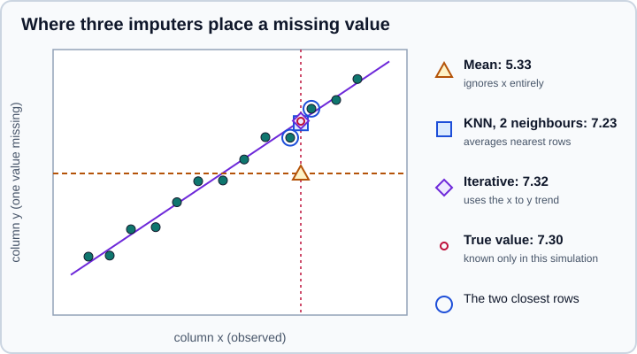

Imputing Missing Values
|
This content was generated with the assistance of AI and should be verified against the official documentation before being relied on in production. |
This page targets NumPy 2.5, pandas 3.1 and scikit-learn 1.9, and it was checked in October 2026. Examples target Python 3.13 or 3.14. Every Python example was run on Python 3.13.18, NumPy 2.5.4, pandas 3.1.0 and scikit-learn 1.9.1. The package is called scikit-learn, it is installed with pip install scikit-learn and it is imported as sklearn.
Real tables have gaps. Many scikit-learn estimators refuse to fit when a value is missing, so the usual remedy is to impute the gap: replace it by a plausible value, and often also record that it was missing. The sklearn.impute module offers four estimators for this: SimpleImputer, KNNImputer, the experimental IterativeImputer and the MissingIndicator. A fifth option is to skip imputation altogether and use an estimator that accepts missing values itself.
The general ideas about missing data in a data frame (how pandas represents it, how to inspect it, when to drop rows) are on Missing Data and Data Cleaning & Preparation. This page covers the scikit-learn side: imputers as estimators with fit and transform, which is what makes them safe to use inside a Pipeline.
Why imputation belongs in the model, not in the data preparation
An imputer learns something from the data in fit: a mean, a median, the neighbours of each row, a regression per column. If it learns from rows that later end up in the test set, the evaluation is optimistic, exactly like any other leakage described in Common Pitfalls: Leakage & Randomness and Feature Engineering. Calling df.fillna(df.mean()) on the whole table before the split is therefore the most common wrong way to impute. Put the imputer in a Pipeline so that cross-validation and hyperparameter search refit it on every training fold, and so that the same fitted statistics are applied to new data at prediction time.
The rest of the page assumes this arrangement and shows it in a complete example near the end.
What counts as missing
Every imputer has a missing_values parameter that says which value marks a gap. Its default is np.nan. The imputers also recognise pd.NA and None in pandas input; nullable pandas columns such as Int64 and Float64 are converted to floating point with NaN for the missing entries.
import numpy as np
import pandas as pd
from sklearn.impute import SimpleImputer
df = pd.DataFrame({
"a": pd.array([1, None, 3], dtype="Int64"),
"b": pd.array([1.5, None, 2.5], dtype="Float64"),
})
print(SimpleImputer().fit_transform(df))[[1. 1.5]
[2. 2. ]
[3. 2.5]]If the data uses a sentinel such as -999 or 0 instead of NaN, pass it as missing_values:
import numpy as np
from sklearn.impute import SimpleImputer
X = np.array([[1, -999], [2, 5], [-999, 7]])
print(SimpleImputer(missing_values=-999, strategy="mean").fit_transform(X))[[1. 6. ]
[2. 5. ]
[1.5 7. ]]Source: scikit-learn: SimpleImputer.
Only one marker is recognised per imputer. A column that mixes NaN and a sentinel needs two imputers or a preliminary replacement in the data frame. Note also that a sentinel 0 combined with sparse input is not allowed: SimpleImputer(missing_values=0) raises Imputation not possible when missing_values == 0 and input is sparse because in a sparse matrix every zero is an implicit entry, not a stored one.
SimpleImputer: one statistic per column
SimpleImputer computes a single value per column during fit and substitutes it for every gap during transform. The learned values are stored in the fitted attribute statistics_.
|
Value used for the gap |
|
Column mean of the observed values. Numeric data only. |
|
Column median. Numeric data only. Less sensitive to outliers than the mean. |
|
Most frequent value. Works for numbers and for strings. When several values tie, the smallest is used. |
|
The value of |
a callable |
A function that receives the 1-D array of observed values of a column and returns the value to use (available since 1.5). |
import numpy as np
from sklearn.impute import SimpleImputer
X = np.array([[7.0, 2.0, 3.0],
[4.0, np.nan, 6.0],
[10.0, 5.0, 9.0],
[np.nan, 4.0, np.nan]])
imp = SimpleImputer(strategy="mean")
print(imp.fit_transform(X))
print(imp.statistics_)
for strategy, kwargs in [("median", {}), ("most_frequent", {}), ("constant", {"fill_value": -1})]:
print(strategy, SimpleImputer(strategy=strategy, **kwargs).fit_transform(X).tolist())[[ 7. 2. 3. ]
[ 4. 3.66666667 6. ]
[10. 5. 9. ]
[ 7. 4. 6. ]]
[7. 3.66666667 6. ]
median [[7.0, 2.0, 3.0], [4.0, 4.0, 6.0], [10.0, 5.0, 9.0], [7.0, 4.0, 6.0]]
most_frequent [[7.0, 2.0, 3.0], [4.0, 2.0, 6.0], [10.0, 5.0, 9.0], [4.0, 4.0, 3.0]]
constant [[7.0, 2.0, 3.0], [4.0, -1.0, 6.0], [10.0, 5.0, 9.0], [-1.0, 4.0, -1.0]]The most_frequent row shows the tie rule: the column [2, 5, 4] has no repeated value, so the smallest, 2, is chosen. The same behaviour appears in a one-column array [1, 2, nan], where the gap becomes 1.
Categorical columns
most_frequent and constant also work for text. With pandas 3 the columns have the default str dtype; the imputer returns an object array of strings.
import numpy as np
import pandas as pd
from sklearn.impute import SimpleImputer
df = pd.DataFrame({"color": ["red", "blue", np.nan, "red"],
"size": ["S", None, "M", "M"]})
mode = SimpleImputer(strategy="most_frequent")
print(mode.fit_transform(df))
print(mode.feature_names_in_, mode.statistics_)
flag = SimpleImputer(strategy="constant", fill_value="missing")
print(flag.fit_transform(df))[['red' 'S']
['blue' 'M']
['red' 'M']
['red' 'M']]
['color' 'size'] ['red' 'M']
[['red' 'S']
['blue' 'missing']
['missing' 'M']
['red' 'M']]Source: scikit-learn: SimpleImputer.
For nominal categories a constant such as "missing" is usually better than the mode, because "missing" becomes its own level that the model can learn from, instead of being disguised as the most common category. OneHotEncoder and TargetEncoder accept NaN themselves and treat it as a category of its own, while OrdinalEncoder passes it through as NaN; this is described in Encoding Categorical Features.
Columns that are entirely missing
If a column has no observed value in the training data, no statistic can be computed. By default SimpleImputer warns (Skipping features without any observed values) and drops that column from the output, so the number of columns changes. Passing keep_empty_features=True keeps the column and fills it with 0 (or with fill_value).
import numpy as np
from sklearn.impute import SimpleImputer
X = np.array([[1.0, np.nan], [2.0, np.nan], [3.0, np.nan]])
print(SimpleImputer().fit_transform(X).shape)
print(SimpleImputer(keep_empty_features=True).fit_transform(X))(3, 1)
[[1. 0.]
[2. 0.]
[3. 0.]]Source: scikit-learn: SimpleImputer.
A dropped column is a silent hazard inside a ColumnTransformer, where it shifts the positions of all later columns and makes get_feature_names_out differ between folds. Use keep_empty_features=True whenever a column might be empty in some fold, for example a rare feature in a small cross-validation split. The same parameter exists on KNNImputer and IterativeImputer.
Fitted attributes and pandas output
After fit an imputer exposes statistics_, n_features_in_, feature_names_in_ (for data frames) and indicator_ (when add_indicator=True). set_output(transform="pandas") returns a data frame with the original column names and index, which is covered on pandas & polars Output (set_output).
import numpy as np
import pandas as pd
from sklearn.impute import SimpleImputer
df = pd.DataFrame({"age": [23.0, np.nan, 58.0], "income": [45000.0, 24000.0, np.nan]})
imp = SimpleImputer(strategy="median").set_output(transform="pandas")
print(imp.fit_transform(df)) age income
0 23.0 45000.0
1 40.5 24000.0
2 58.0 34500.0Keeping the information that a value was missing
Imputing hides the gap: after fit_transform a filled median looks like any other observation. When the fact that a value is absent carries information (a customer who leaves "income" blank may be different from one who fills it in), the model needs that signal. There are two ways to provide it.
add_indicator
Every imputer accepts add_indicator=True. The output then has extra binary columns appended, one per column that had missing values at fit time (the features="missing-only" behaviour of MissingIndicator).
import numpy as np
from sklearn.impute import SimpleImputer
X = np.array([[7.0, 2.0, 3.0],
[4.0, np.nan, 6.0],
[10.0, 5.0, 9.0],
[np.nan, 4.0, np.nan]])
imp = SimpleImputer(strategy="mean", add_indicator=True)
print(imp.fit_transform(X))
print(imp.get_feature_names_out(["a", "b", "c"]))[[ 7. 2. 3. 0. 0. 0. ]
[ 4. 3.66666667 6. 0. 1. 0. ]
[10. 5. 9. 0. 0. 0. ]
[ 7. 4. 6. 1. 0. 1. ]]
['a' 'b' 'c' 'missingindicator_a' 'missingindicator_b'
'missingindicator_c']Source: scikit-learn: Marking imputed values.
Because the set of indicator columns is fixed at fit time, a column that was complete during training gets no indicator, even if it has gaps at prediction time. Use MissingIndicator(features="all") when the output width must not depend on the training data.
MissingIndicator on its own
MissingIndicator is a transformer that outputs only the boolean mask. It is useful when different columns need different imputers but all need an indicator, typically through a FeatureUnion or a ColumnTransformer.
import numpy as np
from sklearn.impute import MissingIndicator
X = np.array([[7.0, 2.0, 3.0],
[4.0, np.nan, 6.0],
[10.0, 5.0, 9.0],
[np.nan, 4.0, 12.0]])
mi = MissingIndicator() # features="missing-only"
print(mi.fit_transform(X).astype(int), mi.features_)
mi_all = MissingIndicator(features="all")
print(mi_all.fit_transform(X).astype(int))[[0 0]
[0 1]
[0 0]
[1 0]] [0 1]
[[0 0 0]
[0 1 0]
[0 0 0]
[1 0 0]]Source: scikit-learn: MissingIndicator.
With features="missing-only", features_ lists the columns that had missing values at fit time. By default error_on_new=True: transforming data that has gaps in a column that was complete during fit raises an error instead of silently ignoring it. The output is sparse when sparse="auto" and the input is sparse, otherwise dense.
KNNImputer: borrow from similar rows
KNNImputer fills a gap with the mean of that column over the n_neighbors closest rows that have the value. Distance is measured with nan_euclidean, the Euclidean distance computed only over the coordinates that both rows have, rescaled for the missing ones. With weights="distance" closer neighbours count more.
import numpy as np
from sklearn.impute import KNNImputer
X = np.array([[1, 2, np.nan],
[3, 4, 3],
[np.nan, 6, 5],
[8, 8, 7]])
print(KNNImputer(n_neighbors=2).fit_transform(X))
print(KNNImputer(n_neighbors=2, weights="distance").fit_transform(X).round(3))[[1. 2. 4. ]
[3. 4. 3. ]
[5.5 6. 5. ]
[8. 8. 7. ]]
[[1. 2. 3.667]
[3. 4. 3. ]
[5.5 6. 5. ]
[8. 8. 7. ]]Points to keep in mind:
-
Scale matters. The distance is dominated by columns with large ranges (income in euros beats age in years). Scale the columns first, for example with
StandardScaler, which ignoresNaNwhen fitting, then impute, then optionallyinverse_transform. Both steps belong in the same pipeline. -
Cost. Fitting stores the training matrix and each
transformcomputes distances to it, so cost grows with rows times rows. It is slow on very large tables. -
No neighbour available. If no neighbour with a defined distance exists for a row, the column mean of the training data is used. A row that is entirely missing therefore receives the column means.
-
Only numeric data. The default metric is
"nan_euclidean"; a callable metric that handlesNaNmay be supplied.
IterativeImputer: model each column from the others
IterativeImputer is the multivariate imputer, inspired by the MICE and missForest algorithms. It starts by filling the gaps with a simple strategy (initial_strategy, "mean" by default), then cycles over the columns that have missing values: in each step one column is the target y, the other columns are the features X, an estimator is fitted on the rows where y is known and used to predict the rows where it is not. The sweep over all columns is repeated up to max_iter times, or until the change falls below tol.
It is still experimental in 1.9 and must be enabled explicitly. The enabling import has no effect on any other class and changes nothing else in scikit-learn.
import numpy as np
from sklearn.experimental import enable_iterative_imputer # noqa: F401
from sklearn.impute import IterativeImputer, KNNImputer, SimpleImputer
rng = np.random.default_rng(0)
Z = rng.normal(size=(300, 3))
Z[:, 2] = 2 * Z[:, 0] + Z[:, 1] + 0.1 * rng.normal(size=300) # column 2 depends on 0 and 1
Zm = Z.copy()
mask = rng.random(300) < 0.2
Zm[mask, 2] = np.nan
def rmse(imputed):
return np.sqrt(np.mean((imputed[mask, 2] - Z[mask, 2]) ** 2))
for name, imp in [
("mean", SimpleImputer()),
("knn(5)", KNNImputer(n_neighbors=5)),
("iterative", IterativeImputer(random_state=0)),
]:
print(f"{name:10s} RMSE {rmse(imp.fit_transform(Zm)):.3f}")mean RMSE 2.222
knn(5) RMSE 0.365
iterative RMSE 0.098The data here are built so that the third column is nearly a linear function of the other two, which is the situation where a model-based imputer shines; the mean ignores the other columns completely. On columns with no relationship the three methods give similar errors, and the mean is then the cheapest and the most stable choice.

Original drawing; the numbers come from running the three imputers on a small simulated column.
The figure shows the same idea on one column. The mean (triangle) puts the gap on the column average whatever x is. The KNN imputer (square) averages the y of the two rows whose x is closest, and the iterative imputer (diamond) reads the value off the regression line it fitted.
Main parameters
| Parameter | Meaning |
|---|---|
|
Regressor used for each column. The default is |
|
Number of sweeps (default 10) and the convergence threshold on the change of imputed values. The fitted |
|
How gaps are filled before the first sweep: |
|
The order of columns inside a sweep: |
|
Use only this many most-correlated columns as predictors, which keeps the cost manageable for wide data. |
|
Clip the imputed values, for example |
|
Draw each imputation from the predictive distribution instead of using its mean. It needs an estimator that supports |
|
Do not fit a model for columns without gaps at fit time; they are initialised and left unchanged. |
|
Seeds the random order and the posterior draws. |
Multiple imputation
A single imputation understates uncertainty: the filled values look as certain as measured ones. With sample_posterior=True and different random_state values, repeated runs give different draws, and the spread between runs measures how uncertain each imputation is. This is the multiple-imputation recipe in miniature. scikit-learn does not pool the results for you (that is the job of a statistics package such as statsmodels), but it supplies the draws.
import numpy as np
from sklearn.experimental import enable_iterative_imputer # noqa: F401
from sklearn.impute import IterativeImputer
rng = np.random.default_rng(0)
Z = rng.normal(size=(300, 3))
Z[:, 2] = 2 * Z[:, 0] + Z[:, 1] + 0.1 * rng.normal(size=300)
Zm = Z.copy()
mask = rng.random(300) < 0.2
Zm[mask, 2] = np.nan
draws = [
IterativeImputer(sample_posterior=True, random_state=seed).fit_transform(Zm)[mask, 2]
for seed in range(5)
]
print(np.std(draws, axis=0)[:3].round(3))[0.065 0.071 0.082]Other points specific to this imputer:
-
Its
transformof new data applies the models learned infitonce, using the final fitted estimators; it does not iterate again on the new rows. -
The result depends on the sweep order, the initial strategy and the estimator, so compare a few settings with cross-validation rather than trusting the defaults.
-
Impute the feature matrix only and keep the target out of it, so that the label never helps fill a feature.
-
The warning
[IterativeImputer] Early stopping criterion not reached.(aConvergenceWarning) means the sweeps stopped atmax_iterbefore the change fell belowtol; raisemax_iteror loosentol.
Estimators that accept NaN themselves
Imputation is not always needed. Some estimators handle missing values internally, usually by learning from the training data which branch a missing value should take:
-
HistGradientBoostingClassifierandHistGradientBoostingRegressorhave always supportedNaN. A missing value is sent to the side of each split that lowers the loss most; if there were no missing values during fit, they go to the side with more samples. -
DecisionTreeClassifier,DecisionTreeRegressorand the extra-tree variants supportNaNwith the default splitter, and the forests andIsolationForestbuilt on them inherit that. -
Several preprocessing steps pass
NaNthrough and ignore it when fitting:StandardScaler,MinMaxScaler,MaxAbsScaler,RobustScaler,PowerTransformer,QuantileTransformer,OneHotEncoder,OrdinalEncoder,TargetEncoderandVarianceThreshold.
You can ask scikit-learn itself, because every estimator publishes the tag allow_nan. On 1.9.1 this query lists 28 estimators:
from sklearn.utils import all_estimators, get_tags
names = []
for name, cls in all_estimators():
try:
tags = get_tags(cls())
except Exception: # estimators that need constructor arguments
continue
if tags.input_tags.allow_nan:
names.append(name)
print(len(names))
print(names)28
['BaggingClassifier', 'BaggingRegressor', 'DecisionTreeClassifier', 'DecisionTreeRegressor', 'ExtraTreeClassifier', 'ExtraTreeRegressor', 'ExtraTreesClassifier', 'ExtraTreesRegressor', 'HDBSCAN', 'HistGradientBoostingClassifier', 'HistGradientBoostingRegressor', 'IsolationForest', 'KNNImputer', 'MaxAbsScaler', 'MinMaxScaler', 'MissingIndicator', 'OneHotEncoder', 'OrdinalEncoder', 'PowerTransformer', 'QuantileTransformer', 'RandomForestClassifier', 'RandomForestRegressor', 'RandomTreesEmbedding', 'RobustScaler', 'SimpleImputer', 'StandardScaler', 'TargetEncoder', 'VarianceThreshold']Creating every estimator also creates the deprecated PassiveAggressiveClassifier and PassiveAggressiveRegressor, so
the loop prints two FutureWarning messages ("Class PassiveAggressiveClassifier is deprecated", and the same for the
regressor) before the output. They do not change the list.
BaggingClassifier and BaggingRegressor appear because their default base estimator is a decision tree; their tag follows whatever base estimator you choose, as it does for meta-estimators such as Pipeline. Linear models, SVMs, nearest-neighbour models, naive Bayes and PCA are not in the list: fitting them on data with NaN raises ValueError: Input X contains NaN. The message points to the imputers and to the native-NaN estimators.
import numpy as np
import pandas as pd
from sklearn.linear_model import LogisticRegression
X = pd.DataFrame({"age": [30.0, np.nan, 50.0, 41.0], "income": [1.0, 2.0, np.nan, 4.0]})
y = [0, 1, 0, 1]
try:
LogisticRegression().fit(X, y)
except ValueError as error:
print(str(error).splitlines()[0])Input X contains NaN.Using native support is attractive because the model decides what a gap means and no statistic has to be invented. It does not remove the need to think about why values are missing. See Gradient Boosting & HistGradientBoosting and Decision Trees.
A complete pipeline: impute, encode, scale, fit
The following example combines the pieces: median imputation with an indicator for numeric columns, a constant imputer for categories, a ColumnTransformer that routes columns by dtype, and a cross-validated score. The synthetic data make the gaps informative: customers with the positive label hide their income six times out of ten, others only one time out of twenty.
import numpy as np
import pandas as pd
from sklearn.compose import ColumnTransformer, make_column_selector
from sklearn.impute import SimpleImputer
from sklearn.linear_model import LogisticRegression
from sklearn.model_selection import cross_val_score
from sklearn.pipeline import make_pipeline
from sklearn.preprocessing import OneHotEncoder, StandardScaler
rng = np.random.default_rng(42)
n = 2000
age = rng.integers(18, 80, n).astype(float)
income = rng.lognormal(10, 0.5, n)
city = rng.choice(["Madrid", "Lyon", "Turin"], n)
y = (rng.random(n) < 1 / (1 + np.exp(-(age - 45) / 8))).astype(int)
df = pd.DataFrame({"age": age, "income": income, "city": city})
df.loc[rng.random(n) < np.where(y == 1, 0.6, 0.05), "income"] = np.nan
df.loc[rng.random(n) < 0.1, "city"] = np.nan
print(df.isna().mean().round(3).to_dict())
def build(add_indicator):
numeric = make_pipeline(
SimpleImputer(strategy="median", add_indicator=add_indicator),
StandardScaler(),
)
categorical = make_pipeline(
SimpleImputer(strategy="constant", fill_value="missing"),
OneHotEncoder(handle_unknown="ignore"),
)
pre = ColumnTransformer([
("num", numeric, make_column_selector(dtype_include="number")),
("cat", categorical, make_column_selector(dtype_include=["object", "string"])),
])
return make_pipeline(pre, LogisticRegression(max_iter=1000))
for flag in (False, True):
score = cross_val_score(build(flag), df, y, cv=5, scoring="roc_auc").mean()
print(f"add_indicator={flag}: ROC AUC {score:.3f}")
model = build(True).fit(df, y)
print(model[:-1].get_feature_names_out()){'age': 0.0, 'income': 0.36, 'city': 0.097}
add_indicator=False: ROC AUC 0.910
add_indicator=True: ROC AUC 0.949
['num__age' 'num__income' 'num__missingindicator_income' 'cat__city_Lyon'
'cat__city_Madrid' 'cat__city_Turin' 'cat__city_missing']Three details of this example matter:
-
The selector uses
dtype_include=["object", "string"]. With pandas 3 a text column has thestrdtype. On pandas 3.1 the olderdtype_include=objectstill selectsstrcolumns, but only "for backward compatibility": it emits aPandas4Warningand the behaviour is scheduled for removal. Naming"string"as well selects thestrand thestringdtypes explicitly and works on pandas 2 and 3. -
The indicator column
missingindicator_incomeis what lifts the score. Median imputation alone throws away the signal that the gap itself predicts the label. -
Imputer, scaler and encoder are fitted inside each fold. The fitted statistics are then reapplied to the validation fold, which is what the section on leakage above asks for.
The mechanics of ColumnTransformer and make_column_selector are on ColumnTransformer & Heterogeneous Data.
Choosing a strategy
| Situation | Prefer | Reason |
|---|---|---|
First baseline, numeric data |
|
Cheap, robust to outliers, and the indicator keeps the missingness signal. |
Nominal categories |
|
"missing" becomes a category the model can use. |
Tree ensembles, gradient boosting |
No imputation, or the |
The estimator learns what a gap means; imputing may remove information. |
Strong correlations between columns, a few thousand rows |
|
They use the other columns; check by cross-validation that they beat the median. |
Very large tables |
|
|
Need to express uncertainty |
|
Gives multiple draws; pool them with a statistics package. |
Missing not at random (the gap depends on the missing value itself) |
An indicator column, a native-NaN model, and domain knowledge |
No imputer can recover information that is not in the observed data. |
Pitfalls
-
Imputing before the split. The statistics leak test information. Fit the imputer on training data only, in a pipeline.
-
Forgetting that the imputer changes the number of columns.
add_indicator=Trueand dropped empty columns change the output width; useget_feature_names_outandkeep_empty_features=True. -
Mean imputation on skewed or outlier-rich columns. Use the median, or transform first.
-
Imputing the target. Rows with a missing label are normally removed; the imputers are meant for features.
-
Treating imputed values as measured. Imputation reduces variance artificially and can weaken correlations. Report that data were imputed and how many.
-
Missing categories mixed with new categories.
OneHotEncoder(handle_unknown="ignore")handles categories unseen in training,NaNis its own category, and an imputer before it is only needed if you want gaps merged with an existing category. -
IterativeImputerimport. Withoutfrom sklearn.experimental import enable_iterative_imputerthe name cannot be imported fromsklearn.impute.
Where older books and tutorials are outdated
| Older statement | Current practice (scikit-learn 1.9) |
|---|---|
|
|
|
|
A |
Use |
A custom |
Use |
Missing values always need imputing before any model. |
Histogram gradient boosting and decision-tree based models accept |
Imputing the whole data frame with |
Leaks; use a fitted imputer inside a |
|
Removed in pandas 3.0; use |